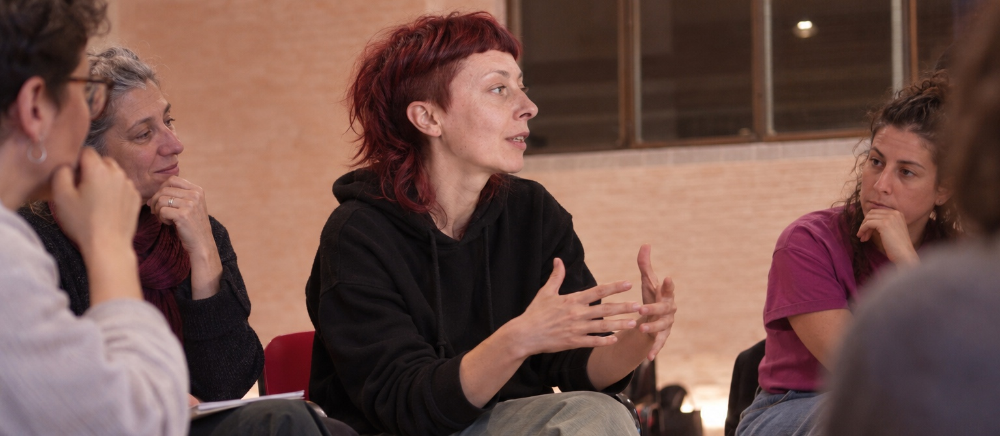

1 · Istituzioni, enti pubblici e organizzazioni
Ricerca indipendente, analisi dei bisogni, gender mainstreaming, gender budgeting, policy writing, stakeholder engagement e formazione.
Ricerca & policy →
Formatore, consulente e ricercatorə indipendente
Ricerca, policy e istituzioni
Genere, relazioni, diritti e processi di comunità. Formazione, ricerca qualitativa, policy making, facilitazione, educazione affettiva e sessuale e pratiche artistiche.
«Costruisco strumenti per capire come desideriamo, quali norme attraversano i nostri corpi e le nostre relazioni e quali possibilità abbiamo di trasformarle.»Porto la stessa attenzione nei processi di policy making: trasformare bisogni, diritti e conflitti sociali in analisi, documenti, processi decisionali e proposte istituzionali.
Cosa puoi commissionare
Le competenze sono trasversali, ma obiettivi, linguaggi e metodi cambiano in funzione del contesto e del tipo di committenza.
Ricerca indipendente, analisi dei bisogni, gender mainstreaming, gender budgeting, policy writing, stakeholder engagement e formazione.
Ricerca & policy →Formazione, public engagement e laboratori su genere, relazioni, sessualità, stereotipi, maschilità, diritti, salute e media.
Formati e percorsi →Consulenza filosofica, orientamento, relazioni, identità, coming out, famiglia, scuola, sessualità e facilitazione del dialogo.
Percorsi individuali →Formati
Immaginari, stereotipi, relazioni, consenso, media literacy ed educazione affettiva e sessuale.
Bias di sesso/genere, accesso ai servizi, salute sessuale e riproduttiva, autodeterminazione e bioetica.
Ruoli, privilegi, emozioni, cura, responsabilità e dinamiche culturali che normalizzano controllo e violenza.
Facilitazione, dinamiche di potere, trasformazione dei conflitti, focus group e progettazione partecipata.
Metodo in pratica
Curatela, ricerca, moderazione e costruzione di contenuti pubblici su transfemminismo e trans her/story.
Co-progettazione e facilitazione di un workshop internazionale su piattaforme digitali, dati, relazioni e lavoro digitale.
Materiali, incontri e confronto tra amministrazione, associazioni e reti territoriali all’interno di un processo di gender budgeting.
Didattica, educazione civica e percorsi su cittadinanza, stereotipi, discriminazioni, conflitto e competenze trasversali.
Scrittura e ricerca
Uno spazio di analisi su genere, politica culturale, scuola, diritti, violenza, istituzioni e trasformazioni sociali.
Contatti
Interventi singoli, cicli formativi, ricerca, consulenza, facilitazione e progetti ad hoc, in presenza e online.